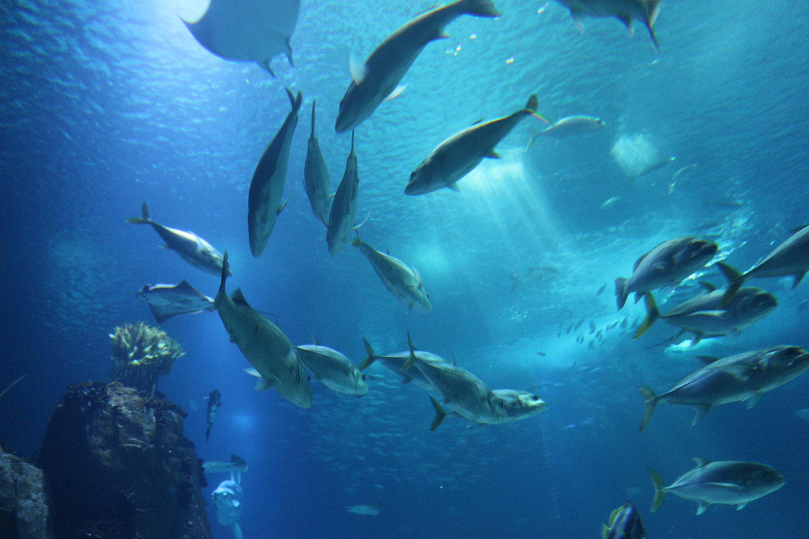
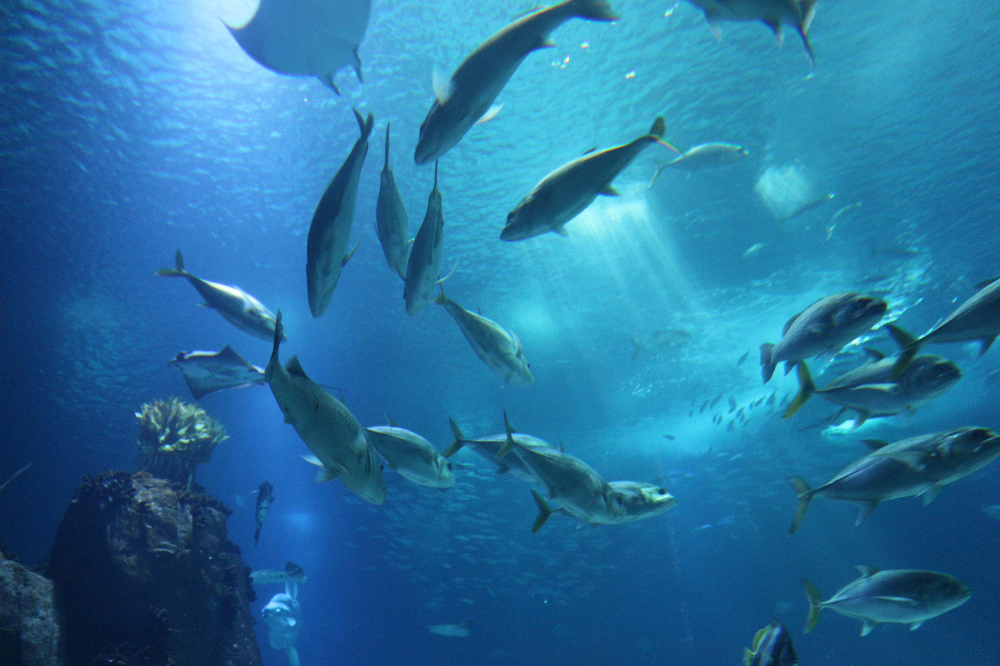

Visão Geral dos Desafios Aquáticos
Os oceanos andam sofrendo grandes impactos, tanto ambientais/naturais quanto pelo próprio ser humano. Encontram-se grandes quantidades de lixo no mar, sendo o plástico em sua maioria, um material que demora cerca de 450 anos para ser decomposto no oceano. Muitas espécies de animais já foram extintas, e outras estão entrando em extinção por conta desses impactos, e é possível reduzir esses impactos. Os oceanos são essenciais para o planeta. São eles os responsáveis por regular a temperatura, pela circulação atmosférica, e por abrigar pequenos organismos que vivem em suspensão na superfície da água; os planctons, responsáveis por produzir metade do oxigênio no planeta. Algumas espécies só ainda existem por conta de unidades de conservação, e o aquarismo pode ser considerado um dos métodos de conservação. A grande maioria dos aquaristas não fazem idéia de como contribuem em relação ao impacto no meio ambiente, com isso, conseguimos chegar a conclusão que há uma falta de incentivo e informação aos envolvidos nesta atividade, além da apresentação da lista vermelha, conscientização em preservar espécies que fazem parte dela e contribuir para que não cresça ainda mais o número de espécies da lista.
 
